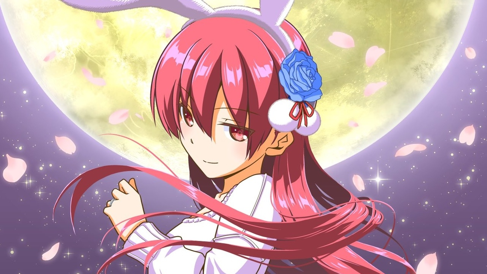
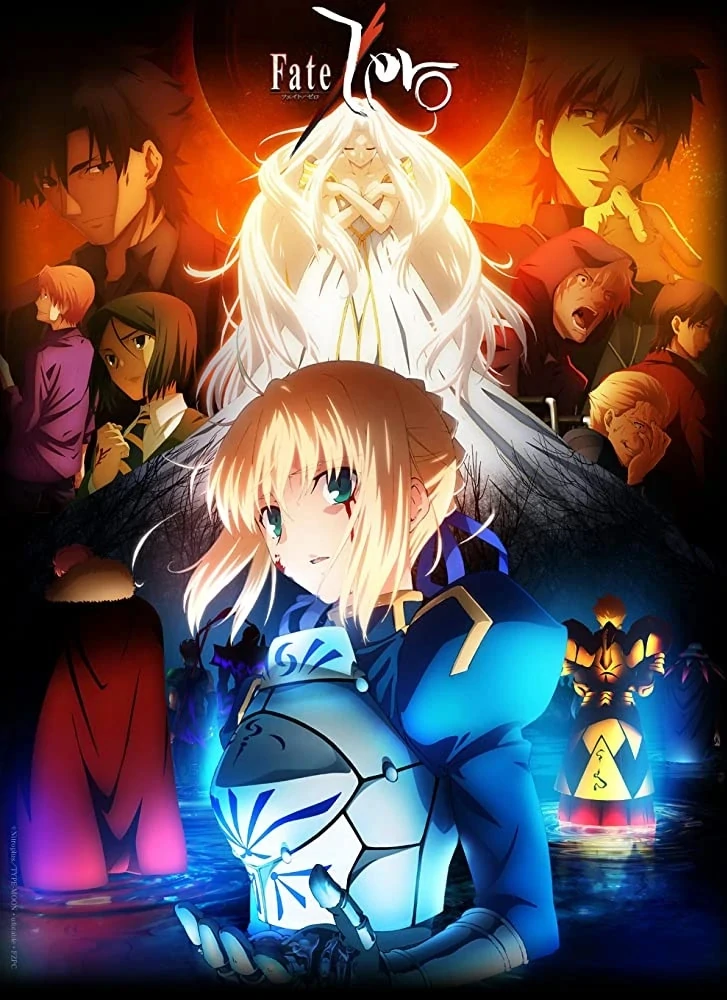

Noticias Recientes
El anime Tonikaku Kawaii tendrá una segunda temporada
Según la página oficial de Kudasai
Una filtración desde China a través de la red social Weibo confirmó la producción de una segunda temporada de la adaptación al anime del manga escrito e ilustrado por Kenjirou Hata, Tonikaku Kawaii (Fly Me to the Moon). La filtración, que proviene de la próxima edición de la revista Weekly Shonen Sunday, no reveló los detalles de producción o la fecha de estreno, pero confirmó que el “importante anuncio” del próximo 6 de noviembre será el video promocional de esta segunda temporada.
Revelan imagen promocional del anime Kyoto Teramachi Sanjou no Holmes
Según la página oficial de Kudasai
La página oficial del anime Kyoto Teramachi Sanjou no Holmes, basado en las novelas de misterio de Mai Mochizuki, estrenó una nueva imagen promocional. En ella se puede ver el Santuario de Yasaka en Kyoto, y a los cinco personajes principales: Aoi Mashiro ( Miyu Tomita ), Kiyotaka Yagashira ( Kaito Ishikawa ), Akihito Kajiwara ( Ryohei Kimura ), Enshō ( Koji Yusa ) y Rikyū Takiyama ( Sanae Kobayashi ). El anime tiene previsto su estreno para julio.
Fate/Zero celebra su décimo aniversario
Según la página oficial de Kudasai
El 1 de octubre de 2021 en Japón se cumplen diez años desde el estreno en televisión de la adaptación al anime de las novelas ligeras escritas por Gen Urobuchi e ilustradas por Takashi Takeuchi, Fate/Zero. En conmemoración, los estudios Ufotable publicaron el video promocional del proyecto en su canal de YouTube.